注意事項
採取前
- 採取前の照合
- 本人
- 指示
- ラベル
- ボトルの種類
- 採取条件の確認
- セット数
- 規定量
- 抗菌薬投与時刻
- 緊急の抗菌薬投与を採取のために大きく遅らせない
- リスクの確認
- アレルギー
- 失神歴
- 出血傾向
- 避ける部位
汚染を防ぐ
- 栓と皮膚を指定どおり消毒し、完全に乾燥
- 消毒後の穿刺部位へ触れない。触れたら再消毒
- 通常は既存の静脈カテーテルから採取しない
- 採取量不足と過量注入を避ける
目的
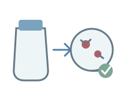
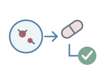
- 汚染を抑えることが前提。
- 患者の状態を正しく反映する検体を提出する。
観察項目
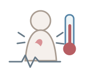
- 体温
- 悪寒・戦慄
- 発汗
- 意識
- 呼吸
- 脈拍
- 血圧
- SpO₂
- 末梢冷感
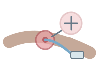
- 感染が疑われる部位を確認する。
- カテーテル挿入部
- 発赤
- 腫脹
- 排液
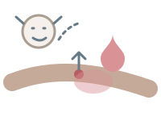
- 疼痛
- しびれ
- 気分不良
- 出血
- 血腫
- 腫脹
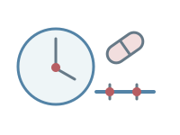
- 抗菌薬投与と採取の時刻を照合する。
- 薬剤名
- 最終投与時刻
- 次回投与時刻
- 採取時刻
必要物品
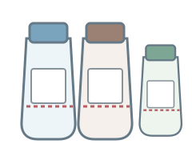
- 好気用・嫌気用を基本に、必要時は小児用。
- ボトルの確認
- 種類
- 期限
- 破損
- 混濁
- 液量目盛り
- 採血針または翼状針
- 専用ホルダー
- 駆血帯
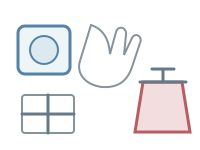
- 指定消毒薬
- 手袋
- ガーゼ
- 止血材
- 防水シート
- 廃棄容器
- 検査依頼情報
- 患者識別ラベル
- 追加PPE（必要時）
- 施設・製品ごとに確認
- ボトル
- 規定量
- 消毒薬
- 採血器具
- 採用製品の取扱説明書と検査部門の指示を確認する。
末梢静脈から採取する手順
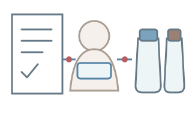
指示・患者・ボトルを確認採取前の照合項目- 本人
- セット数
- ボトルの種類
- 規定量
- 期限
- 採取部位
- 抗菌薬投与時刻
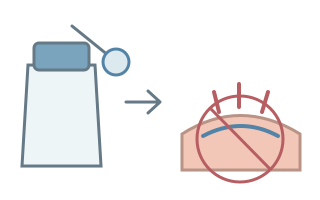
栓と皮膚を消毒- 指定の方法と接触時間を守り、完全に乾かす。
- 乾燥後は触れない。
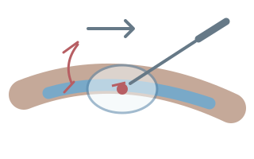
末梢静脈へ穿刺- 避ける部位を除外し、消毒面へ触れずに穿刺。
- 再触診したら再消毒。
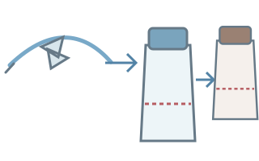
規定量を採取- ボトルを立てて目盛りを確認。
- 翼状針では一般に好気用から嫌気用の順。
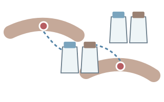
別部位から第2セット- 第1セットとは別の末梢静脈穿刺部位から採取する。
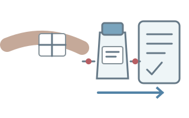
止血・表示・搬送- 抜針後を再観察。
- 採取源と時刻を記録し、検査部門の手順で速やかに搬送。
製品・検査部門の手順を優先する項目
- 翼状針以外の採取順
- 保管条件
- 搬送条件
関連知識
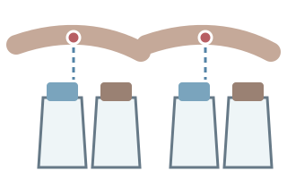
セット数と採血量
- 1セットは「1本」ではない。
- 成人では通常、1回の穿刺で好気用＋嫌気用を採る。
- CDCの成人向け標準は2～4セット、少なくとも2セット。
- 目標量は1セット合計20～30mL。
- 小児へ成人量を適用しない。
- 実際の本数と量は採用ボトル・検査部門を優先。
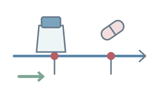
採取のタイミング
- 可能なら抗菌薬投与前。
- 2セットは別部位から続けて採取できる。
- 採取のために緊急治療を大きく遅らせない。
- 投与中は最終・次回投与時刻を共有。
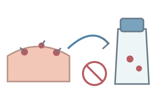
コンタミネーション
- 皮膚常在菌などが混入し、真の菌血症ではないのに陽性になること。
- 汚染防止のため避ける操作
- 消毒不足
- 乾燥前の穿刺
- 消毒後の再触診
- 菌名だけで汚染と決めない。
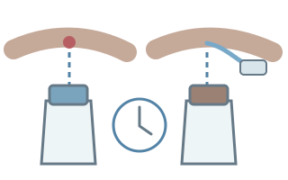
カテーテル感染を疑うとき
末梢血とカテーテル血を同時採取することがある。
- 採取源とルーメンを明記。
- 陽性化時間差などを患者所見と合わせて判断する。
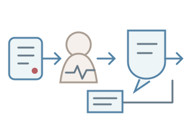
陽性報告を受けたら
- 報告を復唱する。
- 患者を再評価する。
- 速やかに共有する。
陽性報告時の確認
- 患者
- 採取源
- 陽性ボトル
- 菌情報
対応の記録
- 指示
- 対応
- 時刻
- 共有先
出典
- CDC「Collect Adult Blood Culture Sets」
- CDC「Blood Culture Contamination: An Overview」
- WHO「Guidelines on drawing blood: best practices in phlebotomy」
- SCCM／IDSA「Guidelines for Evaluating New Fever in Adult Patients in the ICU」
- IDSA／ACEP「Early Care of Adults With Suspected Sepsis」
- BD「BACTEC Blood Culture Collection Instructions」
- bioMérieux「Blood Culture Collection: Winged Set」